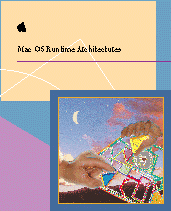

Legacy Document
Important: The information in this document is obsolete and should not be used for new development.
Important: The information in this document is obsolete and should not be used for new development.


Mac OS Runtime Architectures
Mac OS Runtime Architectures describes the runtime architecture based on the Code Fragment Manager (used in the PowerPC and CFM-68K implementations) as well as the original classic 68K runtime architecture. If you are programming for the Mac OS, this book provides essential information about how the various architectures load and manipulate programs as well as how they address and store data. Information in the book includes the following:
- how the Code Fragment Manager-based architecture keeps track of applications and shared libraries
- calling conventions, stack structures, and register and data types for the PowerPC and CFM-68K implementations as well as for the classic 68K runtime architecture
- a description of fat binary programs and how to build them
- the workings of the Mixed Mode Manager, which allows CFM-based code to call classic 68K code and vice versa
- a detailed description of the PEF storage format
Availability: Click below to obtain Mac OS Runtime Architectures in any of the following formats:

Book Contents
- Figures, Tables, and Listings
- Preface - About This Book
- Chapter 1 - CFM-Based Runtime Architecture
- Chapter 2 - Indirect Addressing in the CFM-Based Architecture
- Chapter 3 - Programming for the CFM-Based Runtime Architecture
- Chapter 4 - PowerPC Runtime Conventions
- Chapter 5 - CFM-68K Runtime Conventions
- Chapter 6 - The Mixed Mode Manager
- Chapter 7 - Fat Binary Programs
- Chapter 8 - PEF Structure
- Chapter 9 - CFM-68K Application and Shared Library Structure
- Chapter 10 - Classic 68K Runtime Architecture
- Chapter 11 - Classic 68K Runtime Conventions
- Appendix A - Terminology Changes
- Appendix B - The RTLib.o and NuRTLib.o Libraries
- Glossary